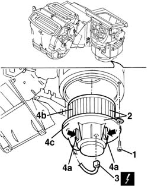
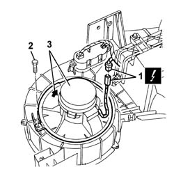
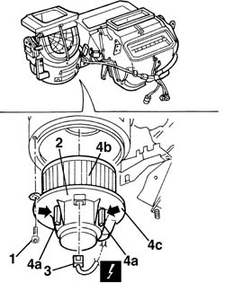

5040C34 fan motor - r+r with air conditioner box removed
- Path
- Procedures > 50 AUXILIARY UNITS > 5040 AIR CONDITIONING CASING AND COMPONENTS > 5040C air conditioner box and components > 5040C34 fan motor - r+r with air conditioner box removed
- Kind
- repair procedure (removal / refitting; the operation number is the code)
- Applies to
- all engines; all production periods
- Interactive page
- https://sloeber94.github.io/elrnDB-a156/en/#/3238335
Applies to: all engines; all production periods; only with equipment: Air Conditioner
 Removing
Removing
 Refitting
Refitting1. Unscrew the bolt.
2. Rotate the support in an anti-clockwise direction and gently extract it.
3. Disconnect the electrical connections.
 | Name | Connector |
|---|---|---|
3 | Passenger compartment ventilation fan |
4. If necessary, press the anti-vibration rubber mountings (4a) and separate the fan (4b) from the support (4c).

Applies to: all engines; all production periods; only with equipment: Air Conditioner
Refitting
RemovingCheck that the fan is not damaged and, if necessary, test it.
If removed, place the fan in the housing engaging the rubber anti-vibration mountings.
Connect the electrical connection
Insert the support - fan assembly in the housing and rotate it in a clockwise direction.
Tighten the bolt.
Test the system using an Examiner or another tester.
Applies to: all engines; production: da 03/02 a 09/03, da 10/03; only with equipment: Air Conditioner
Removing
Refitting1. Disconnect the electrical connections.
| Name | Connector |
|---|---|---|
1 | Passenger compartment ventilation fan |
2. Undo the bolt fixing the fan.
3. Rotate the fan and extract it.

Applies to: all engines; production: da 03/02 a 09/03, da 10/03; only with equipment: Air Conditioner
Refitting
RemovingCheck that the fan is not damaged and, if necessary, test it.
Fit the fan and rotate it, then secure it using the bolt.
Connect the electrical connection
Applies to: all engines; all production periods; only with equipment: Right hand drive and Air Conditioner
Removing
Refitting1. Undo the bolt.
2. Rotate the support in an anti-clockwise direction and gently extract it.
3. Disconnect the electrical connection.
| Name | Connector |
|---|---|---|
3 | Passenger compartment ventilation fan |
4. If necessary, press the anti-vibration rubber mountings (4a) and separate the fan (4b) from the support (4c).

Applies to: all engines; all production periods; only with equipment: Right hand drive and Air Conditioner
Refitting
RemovingCheck that the fan is not damaged and, if necessary, test it.
If removed, insert the fan in its housing ensuring that the rubber anti-vibration mountings are fitted.
Connect the electrical connection.
Insert the support - fan assembly in the housing and rotate it in a clockwise direction.
Tighten the bolt.
Test the system using an Examiner or another tester.